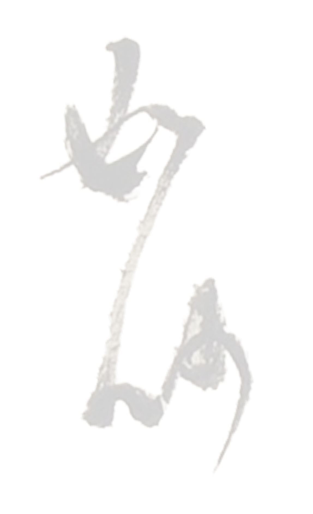
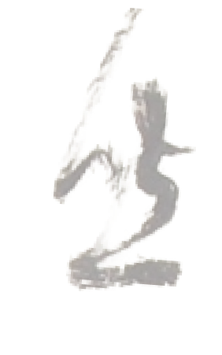
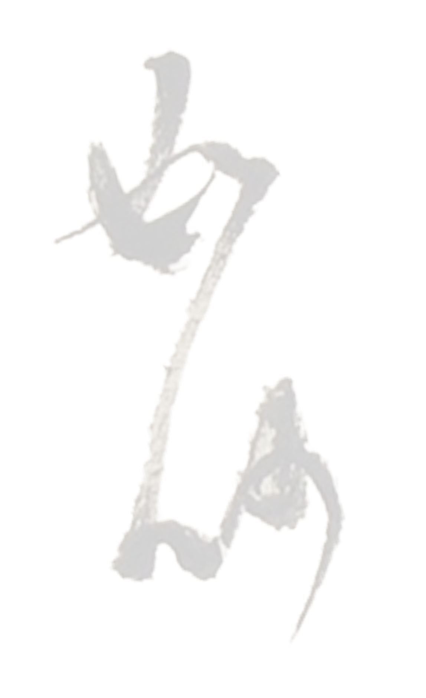
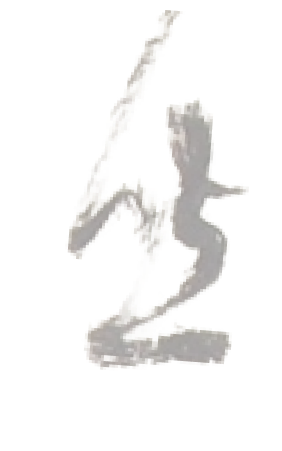
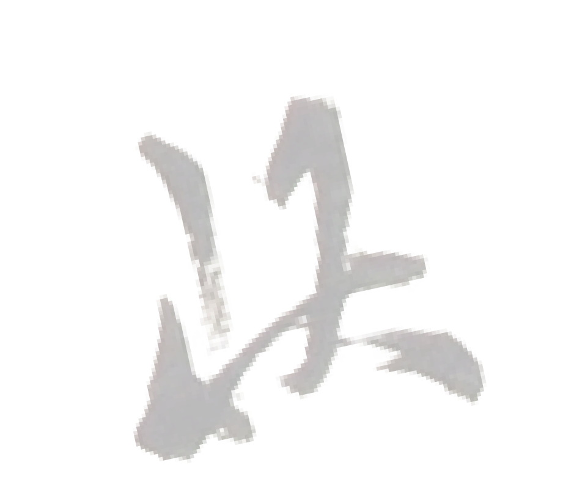
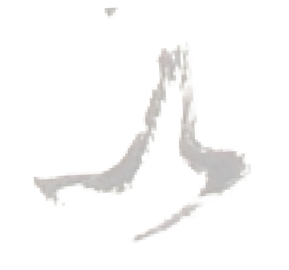
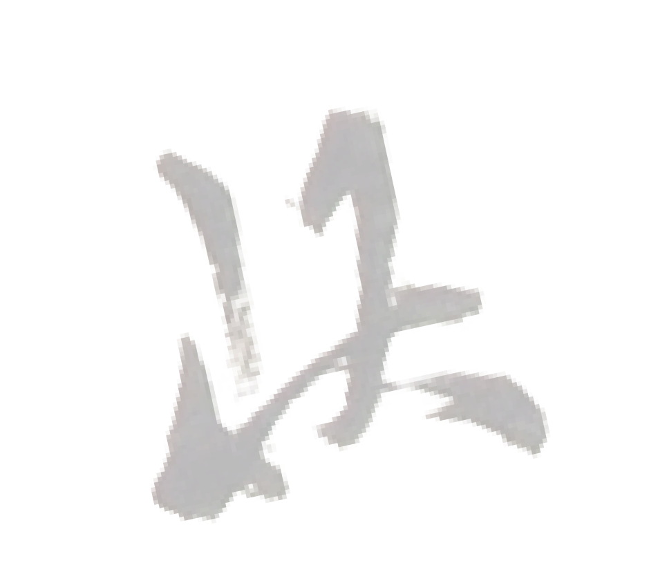
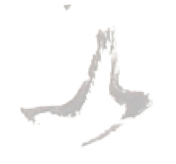

한때 우리는 손으로 안부를 전했다.
그 느린 문장 속엔 ‘시간의 예의'가 있었다.
평안히
오래된 편지의 마지막 인사말.
‘편히 쉬세요’보다 느리고 따뜻하다.
이제는 거의 편지 속에만 남아 있는 단어.
1990년대 말 개인 일기장이나
부모 세대의 손편지에서 자주 발견됨.
강녕하시라
‘몸과 마음이 편안하시길’의 뜻.
조선 후기 서간문에서 자주 등장.
19세기 가문의 편지집에서 발견.
건안하시오
‘몸이 평안하시길 바랍니다’의 정중한 말.
근대 초 신문 칼럼에 남아 있음.
1920년대 《매일신보》
서간체 기고문 중.
무탈하시오
‘별 탈 없이 지내시길.’
1980년대 손편지
“그간 무탈하시길 빕니다.”
안녕강녕하시오
문장 리듬을 위해 중첩된 인사.
1930년대 수필
“안녕강녕하시오, 그립던이여.”
편안히 주무소서
잠에 대한 존칭 인사.
"안녕히 주무세요"와 같은 의미의 정중하고 격식 있는 표현.
1940년대 소설
“이제 편안히 주무소서.”
만강무해하시길
‘만 가지 병 없이 평안하시길'의 축원문
조선 후기 축문.

 



 


